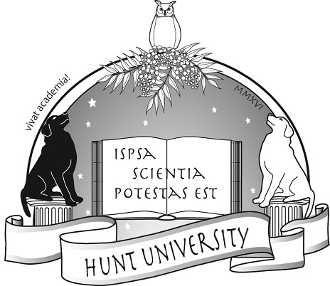
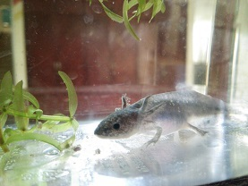

🏠
日
月
縦書き／横書き


「最後の類人猿」
コンゴ内戦とボノボの減少

ボノボの生態
ボノボの社会的な特性


おつかれさまでした


| なつ教授の霊長類学入門２ 伊谷教授の特別講義「コンゴの森とボノボの生態」 (知は力なり！シリーズ) | |
| 伊谷 原一 | |
| etwas Neues (2016) | |
目次
なつ教授の霊長類学入門
Section 2
伊谷教授の特別講義「コンゴの森とボノボの生態」

Vivat academia! vivat professores!
vivat membrum quodlibet!
vivant membra quaelibet!
semper sint in flore!
アカデーミア万歳！教授達万歳！
どの学生も万歳！
すべての友人も万歳！
彼らみな常に華の中にあれ！
霊長類学の世界へようこそ
温泉サルに会ってみたい！
シャバーニと一緒に写真撮りたい！
アイちゃんと数字の早当て競争してみたい！
「なつ教授の霊長類学入門」では、日本が誇る世界でもトップクラスの霊長類研究の基本を作った研究者たちのことを学びます。解説をしてくれるのは、フント大学の美形黒ラブラドールのなつ教授。つやつやな毛並みはみんなの憧れ、そんな教授の講義をお楽しみください。
第１回 霊長類学入門―日本一から世界一の研究へ
第２回 伊谷教授の「コンゴの森とボノボの生態」【本書】
第３回 松沢教授の「山が教えてくれたこと」
講義を受講するのは柴犬さくらさんとウーパールーパーのMrs.ノリコさんです。さっそく受講証を発行しましょう。
現在、本講義では学生募集中です。ペットの写真と一緒に、なつ教授への質問をお待ちしています。これは！という質問や読書感想文は、なつ教授の回答つきで次号に掲載されます。
本書への質問・読書感想文とペットの写真はこちらまで：etwasneuesbooks@gmail.com
- この本は横書きでレイアウトされています。
- また、ご覧になる環境により、表示の差が認められることがあります。
- 本作品では、ルビが（ ）内に表示されています。
はじめに
フント大学理工学部生物科学科なつ教授
皆さん、こんにちは。「霊長類学入門」の講義へようこそ。今回から3人の教授の連続講義が始まります。第１回目はボノボ研究の第一人者、伊谷原一教授の講義です。ボノボが生息しているコンゴでのフィールドワークについて、そして、まだあまり知られていないボノボの特徴について、解説していただきます。
なぜ今の研究の道に入られたのか、またコンゴでのエピソードなど、伊谷教授にお話を聞く時間も設けました。本講座が皆さんにとって素晴らしい体験になることを願います。
おっ、用意できた？なつ教授
用意できました！
第１部
ヒトは類人猿の仲間
皆さん、こんにちは。伊谷原一です。
今回、1か月半 ― 実は、私にとっては非常に短くて、本来は3か月、半年、1年というレベルでアフリカに行かせていただけるとありがたいのですが ― コンゴ民主共和国でボノボを、タンザニア共和国でチンパンジーおよび他の野生動物の調査をしてきました。ですが、今日の講義では、昔からやってきたボノボのフィールドでのお話させていただきます。
世界にはいろいろなサルがいます。「ヒト」もその仲間。この図の中にいる「ヒト」は某えらい方ですが、もちろん仲間です。この図を見れば、私たち人間はゴリラやチンパンジー、ボノボと非常に近いところに位置していることが分かります。
私たちはつい、「サル、サル」と安易に言ってしまうのですが、英語ではニホンザルなどを「モンキー(monkey)」、あるいは「マカク(macaque)」と言います。日本語では「サル」と訳します。
テナガザル以上、比較的ヒトに近い ― しっぽのないヒトたちですが ― 彼らを「類人猿(ape)」と言って分けています。ですから、とくにこの「ヒト」、松沢先生はチンパンジーのことを「サル」というと怒ります。「類人猿」と言え、と。
まとめますと、「オランウータン、ゴリラ、チンパンジー/ボノボ、ヒト」でヒト科４属と呼ばれます。そのうちヒト以外を「類人猿」と言っています。
教授、覚えました！
いろいろな進化の流れがあるなか、いちばん大事なことは、地球上でこのサルたちがすべて今生きている、ということです。このサルからこのサルになって・・・というわけじゃないんだ、とご理解ください。その上で、私たち類人猿の研究というのは、人間性、つまり私たち自身についての研究になります。
私たち「ホモサピエンス」が持つ、体の形であったり、心であったり、行動であったり、社会であったり、そういう性質は長い進化の産物であって、ほかの霊長類と共通の部分もあれば、異なる部分もあります。ある種、自己というものは ― これは人間でもほかの動物でもそうなんですが ― 「内面的な世界」があって、「社会的世界」、「物質的世界」との世界がからみあっているなか、私たちヒトは一体どういう生き物なのか、ということを追及していくのが霊長類学の研究です。いまだに答えを見いだせずにいますけれど・・・。
そこが学問探求のおもしろいところですね
「最後の類人猿」
ボノボ（Bonobo）というのは非常に珍しい霊長類です。類人猿の中でもボノボは比較的ヒトに近いところにいるだろう、ということで、私はボノボを研究対象として、30年以上アフリカに通い続けています。
ボノボは学名をPan paniscusと言います。かつては「ピグミーチンパンジー」と言われていました。なぜボノボになったかというと、ボノボを「ピグミーチンパンジー」と呼ぶなら、ふつうのチンパンジーは「コモンチンパンジー」と呼ばないとおかしい、という議論が沸き起こったからです。そこで、ふつうのチンパンジーはチンパンジー、ピグミーチンパンジーには違う名前を与えましょう、ということになりました。その語源はいまのところ分かりません。
コンゴ中くまなく歩いてきましたが、実は、ボノボという名前はどこからもでてきません。現地では「ビーリャ」、または「モコンブス」と言います。なぜなんでしょうね。個人的にはボノボという呼び方が嫌いですが、「ボノボ」が一般化されていますので、ボノボと呼ぶしかないのです。このボノボは、コンゴ民主共和国の熱帯雨林にしか生息しない非常に希少な種です。タンザニアにも、南アフリカにも、エジプトにもいません。コンゴ森林の中心部だけです。
古い書物をひも解くと、16-17世紀に『アフリカ類人猿の報告』という本がありました。また、1779年に初めてチンパンジーの種としての記載がありました。ボノボは、というと、チンパンジーの亜種、チンパンジーの仲間ぐらいにしか思われていなかったのですが、これが種として記載されたのは1929年です。ですから、チンパンジーが種として記載されてから150年間、ボノボという種は独立した種と認められてこなかったために、「最後の類人猿（The last ape）」と言われます。
ボノボが違う種だと分かるまでにどうしてそんなに時間がかかったんですか？
コンゴ内戦とボノボの減少
今、申し上げたように、ボノボは20世紀に入ってから発見された種であること、さらには1960年代、コンゴが独立してすぐに「コンゴ動乱」という大きな戦争があったため、非常に調査が遅れました。独立してすぐに戦争になったものですから、国は非常に荒れていたのです。ボノボを見るには森の奥へ行かなければならず、またそこへの接近も困難だったことが調査の遅れる原因となりました。
1960年代半ばにコンゴ動乱が終わり、1970年代に入ると国名がザイールに変わります。それが、1998年から2002年まであった戦争で当時の大統領が追放され、またコンゴという名前に戻ります。本格的な調査は1973年にひとりの日本人、実は私の師匠で加納隆至先生ですが、その方が始めました。彼が開いたフィールドが、世界で唯一、長期継続調査を成しえている、さらにこの研究分野では、日本は常に世界をリードしてきました。
さて、1991年、コンゴに暴動が起こり（私もその中にいたのですが）、1996年、1998年-2002年と内乱が起き、調査は中断します。終戦直後、2002年にすぐにコンゴへ行ったのですが、なかなかフィールドまでたどり着くことができませんでした。本格的に調査が再開されたのは2003年から2004年頃です。この間に、ボノボの生息状況は大きく変わってしまいました。
今も調査は続いていますが、今年2016年11月には大統領選挙が予定されていて、大きなデモがあって荒れていました。とにかくそういう政治的な問題が起こると悪い方へいく国なんですね。血の気が多いというか・・・それはそれで楽しいのですが、ちょっとたいへんな国だという印象があります。
ボノボさんたちは今、どのあたりにお住まいなんですか
ボノボのすみか―「コンゴ盆地」
世界の三大熱帯雨林は中南米、東南アジア、そして中央アフリカにあります。私は全部見に行きましたが、中南米、東南アジアの熱帯雨林には驚きました。非常に樹高が高い。それに比べると中央アフリカはかなり低い。今日はボノボのすみか、この中央アフリカの熱帯雨林を中心にお話しします。
これはアフリカの植生図です。よく見てみると、熱帯雨林を中心に同心円状に植生が変わっていっているのが分かります。おおざっぱにいうと熱帯雨林が真ん中にあって、そのまわりに湿生森林があります。さらに外側に ― みなさんはよくアフリカの映像でゾウやキリンを見ると思いますが ―サヴァンナがあります。さらにその外側に砂漠、というように、同心円状の植生構造があって、熱帯雨林はその真ん中にあるわけです。この熱帯雨林のことを「コンゴ盆地」といいますが、コンゴ盆地の大部分はボノボが住んでいるコンゴ民主共和国にあたります。
コンゴ民主共和国
コンゴ民主共和国はかつてアフリカの中で面積が3番目に大きな国でした。ところが第2位のスーダンがふたつに分かれたために、コンゴが第2位に浮上しました。国土面積約235万平方キロメートル、日本の6.2倍あります。森林面積約154万平方キロメートル、国土の68％が森林です。世界の全森林の４％を占めます。人口7000万人、そのうち1000万人から1500万人が首都のキンシャサに集中しています。
コンゴには200以上の部族があります。それはすなわち200以上の言語があることを意味しています。この国の公用語はフランス語、リンガラ語、スワヒリ語、コンゴ語、チルバ語の5つです。このうちフランス語は都会でしか通じません。
スワヒリ語は東のほうで、リンガラ語がほぼ全域で通じます。リンガラ語はどちらかというとガラの悪い言葉で（私もしゃべるんですが）、人にお願いすることがない、ひたすら命令をする言葉です。「これもらえる？」が「くれ！」で、「～してくれる？」が「やっとけ！」のような言語です。
この写真を見てください。コンゴ盆地を上から撮影したものです。「緑のじゅうたん」です。この中に縦横無尽に川が流れています。そのため湿度が非常に高い。おそらく雨季になると湿度９０％以上になるでしょう。
Q どのくらいの湿度なんですの？
A ポテトチップスを置いておくと、2，3分でくにゃくにゃになります。
この地図はボノボの生息を確認した地域と調査地を示しています。濃い赤丸が、1996年以降2004年までに確認された地域、オレンジの丸は1980年以前のものです。生息地がかなり分断されているのが分かります。「『サロンガ国立公園（Salonga National Park）（真ん中の濃い赤を囲む青い線）』にはボノボがいっぱいいますよ」と地元の人がよく言うのですが、実際はほとんどいません。
中北部のロマコ（Lomako）周辺はアメリカやドイツがボノボを調査していましたが、ほぼ全滅しました。かなりまずい状態になっています。日本隊は「ルオー（Luo）学術保護区」（白枠）という調査地を持っています。ほとんどの調査をここでやってきました。私は広域調査をしていたので、ほとんどの地域をまわったのですが、ボノボの生息密度はここがいちばん高かったです。
特別インタビューその１
伊谷教授、お待ちしてました！
はい！
なつ教授：伊谷教授は、どうして今の研究への道に入られたのですか。
伊谷教授：単にアフリカに行きたかっただけです。そのきっかけを作るために、当時、沖縄の琉球大学におられた加納隆至先生に弟子入りしました。「荷物持ちでも雑用係でも良いからアフリカにつれていってくれ」と。もともと自分自身やヒトという動物に対する疑問がありましたから、ボノボは研究対象として最適だったのです。
なつ教授：伊谷先生がよくフィールドワークに行っていらした頃のお話を聞かせていただけますか。
伊谷教授：そうですね。今は私たちがルオー（調査地区）まで行くには、首都のキンシャサからチャーター機で飛んでいきます。
ジープとか、車でジャングルを走るイメージがありました
伊谷教授：なぜチャーター機を利用するかというと、戦争で道が全部つぶれてしまったのです。道がつぶれ、川を渡る船もなくなり、車も壊されました。だから、今はルオーまでチャーター機で一気に飛んでいくしか手段がないのです。私がよくルオーに行っていた1980年代、90年代というのは、自分たちで車を持っていて、それでフィールドにアプローチしていましたよ。熱帯雨林の中を走って行くんです。それがこれ。
りっぱな道です
伊谷教授：道に見えないかもしれませんが。「穴があいてるぞ！」とスタッフに言って木などでふさぎます。走らないと着かないですからね。でも走るとこうやって脱輪します。
こうなると、ここで2, 3日野宿。みんなやる気がなくなる
こちらの写真は、車の下に丸太の橋があるんですが、ちょっとずれるとタイヤが落ちちゃうんですね。タイヤが丸太の間に挟まって、こうなってしまう。
ほら、みんなほとんど諦めてます
水平に保とうとしてジャッキであげているうちに、ジャッキが川の中にジャポンと落ちて ― これでまた、誰が潜って取ってくるかってことで揉めるんですけれど。
なつ教授：過酷ですね。
伊谷教授：まあ、こういうことをしながら進んでいくと、川にでてきます。川があるところはフェリーで渡ります。ロープでフェリーを引き寄せて、板を渡して車を載せる。みんなで対岸から張ってあるロープを引っ張って向こう岸にわたる、「人力」フェリーです。
おーい！こっちだぞー！
仮にみんなで一斉にぱっと手をはなすと、フェリーは川下に流されていきます。ただ、モーターを使うよりは、こういった手動のフェリーのほうがどちらかというと安全でね。モーターが壊れることもないし燃料もいらないし、裏切り者さえいなければなんとかなる・・・ということで、私は安心してよくこれを使っていました。
まっ、私なら泳ぎたいところですが、川の中には何がいるんですか
伊谷教授：本来ならワニやカバが棲んでいるのでしょうが、こうした人間活動が活発なところでは狩猟の影響でほとんどいなくなりました。魚はたくさんいます。
食べられる魚や、ごはんについてはのちほど、また！
第２部
ボノボの生態
こんにちは
さて、ボノボの生態学的な特性ですが、基本的にはチンパンジーと共通している部分が多いです。「複雄複雌」つまり複数のオスと複数のメスによる集団をつくります。集団ごとに、「游動域」という範囲があります。縄張りとはちょっと違います。縄張りというのは、敵が入ってきたらそれを防衛しなければいけない範囲ですが、ただ単に彼らが生活し、行動するエリアを游動域といいます。
基本的に彼らの行動というのは、食べて寝て移動するだけです。朝起きて、少し食べて、移動して、休んで、食べて・・・食べること、動くこと、休息することの繰り返しで1日が終わります。
そして彼らは「雑食性」です。主に食べるのは植物性の食べ物ですが、それ以外にも昆虫であったり、鳥の卵であったり、ときには他の動物の肉も食べます。チンパンジーは非常に頻繁にハンティングして他の動物の肉を食べますが、ボノボはせいぜいリスやムササビ（正確にはウロコオリス、ムササビのような形態をしていますが、コンゴ森林にムササビはいません）を樹上で捕まえて食べることはありますが、そんなに頻繁にハンティングをしませんし、肉食の頻度も低いです。
「食物の分配」、これはチンパンジーとボノボに見られる行動で、相手の持っている食べ物を「ちょうだい」、自分の持っている食べ物を相手に「あげる」。ヒト以外のサルはしない行動です。ニホンザルがだれかに「これあげるよ」なんて見たことないです。「ちょうだい」もしません。でも、ボノボとチンパンジーはします。
すぐ「お手」しちゃいます
夕方になると、ボノボたちは必ず樹上にベッドを作ります。毎日新しいベッドを作ります。同じ木に寝ていても一回使ったベッドは使いません。必ず夕方の5時半か6時に、みんなで「ワーワー」言いながら樹上に上り、枝をバキバキと折りながら直径１メートルくらいの鳥の巣状のベッドを作ってそこに寝ます。
けっこう寝心地はよくて、樹上で風も吹くし、揺れ具合もいいです。何度か寝たことがあるんですけれど、ダニとかがいっぱいついてきて・・・ちょっと困りましたが、かゆみさえ耐えられれば比較的寝心地はよい。そもそもアフリカという国は「かゆい国」なのです。
かゆいのは苦手です
ボノボの社会的な特性
次にボノボの社会的な特性をお話をしますが、ボノボの場合、性行動なしでは語れないと思ってください。性行動というのはボノボが本来持っている行動の特性なんです。
「奥さま、お聞きになった？」「何ですの？」
彼らの社会の特性として、メスが非常に高い集合性を持っています。つまりひとつの集団の中でいつも群れの中心部にいるのはメスです。メスは非常に強く、ときとしてオスよりも強い。オスはひとりでいることが多く、群れの中でもあまり団結しません。
それに対して、チンパンジーはオス同士の連帯というのが非常に強いんですね。ボノボはメス同士の連帯が強い。たとえば、若いオスがちょっとメスにいたずらをしたら、そのあと、そのオスはほかのメスたちにボコボコにされます。袋叩き。どこかの社会と似てますね・・・。メスが非常に力を持っている。
「ママ・・・」「しょうがないわねぇ」
その理由のひとつは、オスのマザコンにあります。上の写真は7歳のボノボとお母さんです。男の子といってもあと1，2年で若者。メスだったらほぼ初発情期を迎えている頃。なのに、もうお乳なんか出ないお母さんにしがみついて、お母さんの乳首を吸っている。お母さんも「しょうがないわね」とあまやかす。
それからさきほど言いましたように、非常に特異的な性行動があります。「類交尾行動」というのですが、これについてはあとで説明します。そしてほかの霊長類、類人猿には見られなかった平和的集団間関係があります。
基本的にヒトは「対等」という前提のもとに、まったく見知らぬ者同士でもちゃんと挨拶をかわして、平等に、平和的につきあいます。少なくとも表面上は。私たちは、いくら心の中でどう思っていようと、たとえ 「こいつキライなんや」と思っていても、表面上は「こんにちは、おはようございます」と言いますよね。
でも、ほかのサルたちはそれができません。たとえばチンパンジーの場合、ここにある集団がいて、よそから来た違う集団と出会ったら大げんかが始まります。ときには戦争のようにとことんやります。ゴリラもそうです。ほかのマカクやモンキーたちもそうです。
ところがボノボたちはそれをしない。昔は、ボノボもケンカをすると思われていたし、私もすると思っていました。実際ケンカしているシーンも見たことがあったので、やっぱりボノボも集団間の関係が悪いんだな、と思ってたんですが、あるときちょっと状況が変わりました。状況が変わったというか、まあ、私たちがちゃんと観察していなかったことだけです。これはおそらく、ヒト以外の霊長類で初めて確認された、ほかに例をみないボノボの集団同士の出会いです。ここであげた４つの現象というのが彼らの社会の特性です。

子育ては大変ですからね
ボノボの「集団」
よいしょ、っと
さきほど「集団」といいましたが、ボノボの「集団」は一年を通じて一緒に行動します。交尾期・非交尾期という特定の期間はありません。ニホンザルは秋から冬にかけてが交尾期で、春から夏にかけてが出産期です。つまり季節繁殖性を持っています。
ところがボノボにはありません。ボノボとチンパンジーはだいたい３４日くらいの性周期（人間とほぼ同じです）を持っていて、その間に排卵と月経を繰り返します。ですから、排卵をしているときに交尾をすれば赤ちゃんができることになります。
ボノボはオスとメスがいつも安定した状態でいる集団です。 「社会性比」というのはひとつの集団の中に見られる成熟したオスとメスの比のことをいいますが、チンパンジーの場合、オスとメスの社会性比は、ひとつの集団の中で1対2～3。つまりオスが5頭いれば、メスは10～15頭、オスが10頭いればメスは20頭～30頭くらいいる。ところがボノボは1対1なんですね。オスが10頭いればメスも10頭いる。ほぼ1対1。
その原因はよく分からないのですが、たとえばチンパンジーには子殺しがあるんです。チンパンジーのオトナのオスは、生後半年くらいのオスの子どもをメスから奪い取って殺して食べてしまうことがあります。その一方で、ボノボにはそういうことが起こりえないのです。
さきほどメスが強いといいましたが、もし、オスがメスから赤ちゃんを奪い取ってみようものなら、ほかのメスたちがやってきてボコボコにします。なので、まずそんなことは起こらないのです。その結果、オスの子どもが死ぬことがないので、社会性比が1対1に保たれているんじゃないか・・・これはまだ推測の域を出ないのですが、そういうふうに考えられています。これについてはもう少し研究してみないと明らかにならないでしょう。
ボノボの社会構造
このように、チンパンジーとボノボは同じ複雄複雌の集団を作るのだけれども、集団の構成には違いがあります。また、日本ではチンパンジーやボノボの集団のことを「単位集団」、ユニット・グループという言い方をしますが、欧米では「コミュニティ」という言い方をします（その理由はややこしいので、ここでは省きます）。
チンパンジーとボノボの単位集団で生まれたメスは、ある年齢、たいてい7～9歳ですが、交尾をすることができる初発情を迎えると、自分の生まれた集団を出ていきます。そして、ほかのいくつかの集団を渡り歩き、いずれは別の集団に定着します。
メスが集団間を動いている ― 私たちはこれを「嫁入り」と呼んでいますが、メスが自分の生まれた集団からほかの集団に移籍するということは、集団はオスの血縁によって継承されていくことになります。つまり、彼らは「父系社会」を築いているのです。私たち人間の社会と似ているところがあります。初発情を迎えるころ、交尾ができるころに自分の産まれた集団を出ていくということは、自分の兄弟やお父さんとは交尾をしないことになりますから、近親交配は起こらない、回避されているのです。
実は社会学的には非常に重要な部分なんですが、私たちと比較してちょっと違うのは、ヒトはルールとして近親交配を禁止しています。社会的規範があってそうなっています。しかし、ボノボたちは社会構造上そうなっているのです。彼らには近親交配という言葉や概念がないので、規範ではなく、おそらく絶対起こらない社会構造になっているということです。その辺が、人間の社会と違うところかもしれません。社会学的にもう少し詰めていかないと正確なことはいえないのですが、少なくとも近親交配は回避されている。
繰り返しになりますが、オスの血縁で継承されるわけですから、チンパンジーもボノボも同じ父系社会です。また、さっき言いましたように、チンパンジーはオスが強いのですが、ボノボは圧倒的にメスが強いので、チンパンジーは「父系・父権」、ボノボは「父系・母権」 ― これはさきほど示したメスの高い集合性、そしてオスがマザコンであるということが大きく影響しているんではないかと思います。
特別インタビューその２
また、インタビューさせてください
はい、どうぞ
なつ教授：ルオ―の調査基地について、もう少し教えていただければ、と思って。
伊谷教授：分かりました。これが調査基地です。けっこう大きいです。中に大きな部屋が４つと真ん中にサロンがあります。外から見るとこんな感じです。
私が1991年につくりました
伊谷教授：ここに長期滞在して調査します。行けば当然、歓迎の祭り、さらに宴と踊りですね。みんな集まってきて、「よく来たな、久しぶりだな」と体中をペイントして踊ってくれます。夜になればタダ酒を飲めるのでさらに人が集まってきてどんちゃん騒ぎになります。
タダ酒を飲みにきた、いえ、歓迎に来た人たち
食べ物にはどんなものがあります？
伊谷教授：この丸いものは主食で、クワンガといってキャッサバを粉にして作ります。キャッサバには青酸化合物が入っているので、皮をむいたらしばらく水につけておきます。そのあと粉にして、通常は熱湯をかけ、こねて団子状にして食べます。ところがコンゴではこれをマランタシーという大きな葉っぱで包んで蒸すんですね。においはちょっときついんですけれど、日持ちする。だからお弁当とかに持っていける。これが主食です。これをほぼ毎日、毎食食べます。
日本のお米みたいなものです
伊谷教授：川にいけばナマズ系の魚がけっこういます。これもおいしいです。
ときには化け物みたいに大きな魚も捕れたりします
伊谷教授：それからおつまみみたいな幼虫がいます。
ひぇ～！！
伊谷教授：すごくおいしいんですよ。生でもおいしいんですけれども、炒ってみると自分の体から油を出して、自分で揚がるんです。とても香ばしく、ビールのおつまみに最適です。写真を見せるとみんないやそうな顔をするけれど、食べず嫌いってやつですね。本当においしいです。
伊谷教授：この地図を見てください。フィールドにある集落なんですが、よく見ると中央に道が通っていて、その周りはほぼ二次林、あるいは畑しかありません。
二次林って何ですか？
伊谷教授：かつて切り開かれた森のことです。濃い緑色のところは、乾燥一次林、あるいは湿性一次林で、下のほうに見える四角い場所は昔からあるコーヒーのプランテーションです。植民地時代からあったものです。このフィールドの中に私たちの基地があって、当時はここに大きなボノボの集団がいました。北側にも南側にもいました。このなかに6集団、約400頭のボノボが生息していたんですよ。
ジャングルの中ってどんな感じなんですか？
伊谷教授：そうだね、まずはこの写真を見て。これは「板根」と言います。このあたりは非常に地盤がゆるくて根が浅いため、根っこを板状にして地上に張り出さないと木は立っていられません。あるいは湿生林へ行くと、今度は「支柱根」という、地上でタコの足のように根を広げて自分の体を支える木もあります。
板根
支柱根
伊谷教授：こうした森の中を私たちは「森の達人たち」と一緒に歩きます。正直言いますと、この人たちがいなければ私たちは何もできません。たとえば森の中にポンと放り出されたら、私には西も東も、右も左も分かりません。ただ、このフィールドには長くいるので、道さえあれば帰れますけれど、道のないところにポンと置かれたら、どこへどうやって帰っていいのか分かりません。
森の達人たちに囲まれる伊谷教授
でも、この人たちには分かるんです。「昨日ボノボに会ったところに行きたいんだけれど」というと、「ああ、あそこか、この道をまっすぐいったらな、ウワパカの木があっただろ、それの3本目を右に曲がるんだ」と。どの木で、それがどこにあるのか私たちにはさっぱり分かりませんが、彼らにはその木が「角にあるポスト」みたいな感じで分かるのです。
なつ教授：この人たちがいなかったら、伊谷教授のボノボ研究は成り立たないんですね。
伊谷教授：ええ。それくらい森のことをよく分かっている。この人たちがいなかったら、私たちは仕事ができない。彼らの力を借りながら、フィールドで調査を行うのです。
ありがとうございました！
第３部
ボノボの性行動
マウンティング
さきほど話に出てきた、ボノボの特徴でもある「類交尾行動」というのは、オス同士であれ、メス同士であれ、オスとメス同士であれ、性器の接触を伴う行動のことを言います。オス同士ですと「マウンティング」ですが、上の写真では順位の高い方が下にいます。なので、実際、彼らの社会に順位はあるのですが、ニホンザルのように優位、劣位を確認する順位確認のための行動ではありません。
仲直りしようぜ
上の写真を見てください。ボノボの行動でおもしろいのは、オス同士による「尻つけ」というお尻とお尻をくっつける行動です。これは仲直りの行動ではないかと考えられています。ケンカする気がなくなるでしょう？友だちと気まずくなったときはぜひこれをしてみてください。こうやってお尻をあわせてちょんちょんちょんとする。
仲良しになれたわね
これは初めて見たとき私も驚いたのですが、メス同士が対面に抱き合って性器をこすりあわせるんですね。初めてボノボを見に行ったのはまだ20代で、いまほどぐれていなかったのでショックでしたね。おもしろいのは、これによって個体間関係が強化されることです。親密になっていくのです。そして、たいていは順位の高い方のメスが下になります。緊張したり、なにか不都合なことが起きたりすると行います。出産経験の多い、性皮の大きいほうが年長です。
交尾は緊張したときに非常によく行います。朝起きてみんなが顔を合わせて興奮したとき、それぞれが続けて交尾を行います。考えられないのは発情していないメスも交尾します。さらには交尾をするのですがオスが射精をしない場合もあります。若いオスがメスを交尾に誘うときもあります。チンパンジーだったら「若造のくせにお前はなまいきだ」と年長のチンパンジーが来てじゃまをするのですが、ボノボにはそういうことはありません。
ちょっと緊張しているとき、その緊張を緩和するために交尾をする。オスが射精せず、メスが発情していないときも行う。発情していない、ということは排卵していないので、なんのために交尾をしているんだ、ということになってしまいます。つまり、繁殖目的以外に交尾をしている可能性が高い、というわけです。さらには多彩な交尾姿勢、立ったまま、対面、座ってなど。こうやって考えますと、ボノボの性行動、あるいは類交尾行動という性器接触を伴う行動というのは、緊張を緩和したり、相手をなだめたり、なぐさめたり、個体間関係を強化したり、と社会関係を調整する機能を持っていると思います。
生殖と性の分離 ― おそらく、多くの霊長類のなかで、生殖と性が分離しているのはヒトとボノボだけです。チンパンジーもそれに近い部分があるのですが、どちらかというと露骨に発情したときしか交尾しない、交尾したら射精しますが、ボノボはその点が異なります。
それからもうひとつ、さきほど申しました集団間関係ですが、上の写真に赤い線が引いてあるのは、左上と右下は違う集団なのですが、ほかの霊長類、チンパンジーだったらここで大ゲンカになっています。ところがボノボはならない。どうなるかというと、強いメスたちが積極的に相手の集団に入っていきます。そして、相手集団のオスとあるいはメスと交尾をしたり、性器こすりをしたりと、いつも自分たちが集団の中で行っている行動を、違う集団の相手と行います。いろいろな社会交渉を持つわけです。
その結果、平和的に共存してしまう。交尾に関しては集団間でのものが圧倒的に高いです。メスが非常に積極的な証拠です。性器こすりや毛づくろいも、集団内と集団間であまり変わらない。
ボノボの「嫁入り」
通常、他の類人猿の異なる集団間の関係でこれほど多彩な社会交渉はありません。さらにはそれがさきほど言ったメスの移籍のきっかけとなっている可能性があります。メスたちは自分の産まれた集団から違う集団へと入っていきます。全然知らない人たちばかりのところへ小娘が入ってくるわけです。どうやってなじんでいくのか、ということを調べてみました。
赤い丸の名前はもともといるおばさんボノボたち、そのあとに続くのが子どもたち
この集団で産まれたオレンジ色のメスはみんな出ていきます。かわりに「ナオ」「キク」「ミソ」という新しいメスが他の集団から移入してきました。移入してすぐは、どの新参メスもすべての既存メスに接触します。ご挨拶です。毛づくろいしたり、性器こすりをしたりします。とにかくオスはほったらかしで、メスと接触します。
しばらくすると、それぞれが特定の先輩メスにつきます。つまり、「ナオ」という個体だったら「「カメ」、「キク」だったら「ハル」、「ミソ」なら「ビヒ」のように、特定のメスだけに追従します。特別な関係をつくって、徐々に集団に親しんでいきます。このときに、移入してきた子たちが、いかに既存のメスをちゃんと見なければならないかが分かります。
なぜかというと、順位の高いメスについたメスは、のちに順位が上がります。ミソは最初から選択ミスですね・・・。キクは強いメスにつきましたから、非常に先見の明がありました。おそらく、いま、この集団ではキクがいちばん強いメスになっています。このように非常におもしろい構造がメスの移籍の中に見られます。
私たち、人間社会には言語、コミュニケーション、契約や制度などいろいろな問題があります。そういった人間社会にみられる現象は、霊長類から得た知見を人類学の中に位置づけて考える必要があると思います。「こんなおもしろい行動がありますよ」で終わってはいけないと思います。
ヒトと同じ？？「二足歩行」
ボノボは頻繁に二足歩行をします。左からチンパンジー（むかし私と一緒に暮らしたツバキちゃんですが）、真ん中はさきほどの表でいうとキクです。そして右はアウストラロピテクス・アファレンシスといって、初期人類のフレッシュ（肉付け）モデルです。
見ると分かるように、ボノボの歩き方がほぼヒトでしょう。ほら、買い物帰りのお母さんと変わらない
これはアウストラロピテクス・アファレイシスの骨格モデルをCGでつくったもの（左）で、その歩き方を推定したものですが、そこにボノボの歩き方（右）を重ねてみましょう
ほぼ、変わらないんですよね。非常にきれいなストライド歩行をしていることが分かります
TVゲームもできる！？高度な知性
車を盗もうとしているのかな
石器を作ったり
レキシグラムという言語機械を使って自分の意思を伝えたり
お風呂に入ったり（ふつうチンパンジーなどは水を嫌うのですが、ボノボは平気です）
ボノボは非常に高度な知性を持っています。上の写真から、いろいろなことを本能ではなく、学習によって習得しているということが分かります。これらは特殊な事例で、野生のボノボはこんなことをする必要がないのでやらないです。その能力を潜在的に持っているということと、それが表出するということは次元が違います。必要があれば、というか、教えられればここまでやってしまう、という事例です。
パンバニーシャ、ゲーム開始！
同じ図形を選んでクリックするゲームをクリア！
上の写真はパンバニーシャというメスの手で、初めて教えてもらったTVゲームを難なくこなしているところです。彼女にはカンジというお兄さんがいるのですが、カンジは何日かかったかちょっと忘れましたが、「パックマン」というTVゲームを全面クリアしたそうです。
博士と踊るダンシング・カンジ
ここまで高度な知性を持っているボノボですが、今後どのような事実がでてくるのか非常に楽しみにしています。
新たなフィールドを作る！
おまけです。2016年、ボノボの新たな生息地が発見されました。地図の左にある赤丸の場所、Mbali川流域です。今回そこに行ってきました。キンシャサから川をさかのぼって300キロ、陸路で800キロ、チャーター機で1時間、そこに新しいフィールドを作ろうとしています。
なんでこんな年齢になってまでやるのか、つくづく自分でも思うのですが・・・実は今までのフィールドと異なるから、なのです。どこがどう違うのかというと、私たちはボノボを純粋な森林居住者だと思っていたんですが、ここでは、ボノボが森とサバンナ草原が入り混じった混交林にいたのです。
森だけだったら気にもしなかった。ところがボノボの分布域の最西南端、ここはただの草原です。景観もサバンナです。ここに彼らが住んでいることが明らかになりました。こういうところにも特殊な植物がありますからそれを食べながら、森も利用して、そしてまた、ときどきサバンナに出てきて、といったことを繰り返しているのです。
これまで私たちはこんなところにボノボがいるとは思っていなかったので、このフィールドでボノボを詳細に観察できるようになると、またいろいろなものが見えてくるのではないかと思っています。
たとえば森林のボノボとの比較ができます。そして、これも非常に変わっているのですが、この地域にボノボがいて、川を挟んで向かい側にゴリラがいるんです。さらにその北の方にチンパンジーがいるんです。大河で隔たれているので、ボノボが彼らと一緒になることはないのですが、生息環境は非常に似ているわけです。
そういうところで、３種のアフリカを代表する類人猿がいるということは、それぞれが一体どういった環境適応をしているのか、そういったところからの比較が可能になっていくかと思います。
ご清聴ありがとうございました。
伊谷教授、ありがとうございました！
おつかれさまでした
なつ教授
次のフィールドワークにはぜひ参加させてください
さくらさん
私もそのレインコートほしいです
Mrs.ノリコさん
私も携帯水槽がほしいです
了解！
＜著者紹介＞
伊谷原一（いだに げんいち）
愛知生まれ。京都大学教授。理学博士。京都大学野生動物研究センター教授、日本モンキーセンター附属動物園園長。1984年、沖縄の伝統的漁撈を対象にした生態人類学的研究を開始。その一方で、中央アフリカのザイール共和国（現コンゴ民主共和国）で野生ボノボを、隣国のコンゴ共和国やタンザニア共和国で野生チンパンジーや小～大型哺乳類を対象に社会生態学的研究に従事。また、アフリカ熱帯多雨林や乾燥疎開林の保全活動も行う。国内では、飼育下野生動物の福祉を目的に、動物園・水族館との連携事業を推進している。
＜編集＞
金矢 真美（かなや まみ）
東京生まれ。上智大学文学部ドイツ文学科卒業。教育出版社での文部科学省検定高校英語教科書の編集業務を経て、現在、シリア在住のGhaythaa DeebとIFサイトを立ち上げ、世界中の人たちと英語でおしゃべりをする場を運営、エトヴァス・ノイエスで電子書籍を制作・販売する。趣味は、気心の知れた人たちと楽しい時間を過ごすこと。
＜参考サイト＞
＜写真提供＞
伊谷 原一
辰巳 祐樹（なつ）
宮野 桂子（さくら）
飯田 範子（Mrs. ノリコ）
―――――――――――――
なつ教授の霊長類学入門 2
伊谷教授の特別講座「コンゴの森とボノボの生態」
2016年 11月 30日 発行
著者 伊谷 原一
編集 金矢 真美
発行所 エトヴァス・ノイエス
etwasneuesbooks@gmail.com
http://etwasneues.wpblog.jp/
Copyright© 伊谷 原一 2016年
- この図書は、デジタル配信用です。
- 本作品の内容あるいはデータを、全部・一部にかかわらず、無断で複製、転載、改ざん、改変、公衆送信（インターネット上への掲載を含む）することは、法律で禁止されています。また、個人的な使用を目的とする複製であっても、コピーガードなどの著作権保護技術を解除して行うことはできません。
IFについて
2016年 ― 「もしわたしたちが一緒に何かを考えたら・・・」 シリアと日本、西と東のアジアの両端にあるふたつの国から、IFというサイトが誕生しました。読む人と書く人がお互いやりとりするなかで、物語、考え、趣味、意見などを世界中の人たちとシェアしながらの、読者参加型のサイトです。現在までに世界２００地域の人たちがアクセスしています。サイトでは英語を使っていますが、完璧な英語でなくてかまいません。ぜひ遊びにきて、皆さんのIFを教えてください。

Etwas Neues Booksのお知らせ
ドイツ語で「何か新しいこと」を意味するエトヴァス・ノイエスでは、みなさんの知的好奇心をくすぐるさまざまな分野の書籍を出版しています。
あるときは発掘現場へ飛び込み・・・
あるときは音楽の調べを追いかけ・・・
あるときは小説の主人公になり・・・
そしてあるときは人類の進化をなぞり・・・
さあ、未知の世界へ出発です！
http://etwasneues.wpblog.jp/
知は力なり！ なつ教授の＜霊長類学入門＞シリーズ
フント大学では新たに黒ラブラドールのマドンナ、なつ教授の霊長類学講義も受講できます！
一緒にアフリカへGO!
SECTION 1 日本一から世界一の学問研究へ【新刊】
SECTION 2 伊谷教授の特別講義「コンゴの森とボノボの生態」【新刊】
SECTION 3 松沢教授の特別講義「山が教えてくれたこと」【新刊】
＜順次発刊予定です！お見逃しなく！＞
知は力なり！ ルーカス教授の＜エル・システマ入門＞シリーズ
カッツェン大学の永遠のライバル、フント大学ではハンサムなゴールデン・レトリバー、ルーカス教授の講義も受講できます！
いっしょに音楽を楽しみましょう！
素敵な質問にはプレゼントを考え中・・・
＜エル・システマ情報とともに、シリーズ発刊予定です！お見逃しなく！＞
知は力なり！ シャムス教授の＜考古学入門＞シリーズ
カッツェン大学のシャムス教授がお贈りする「考古学」の魅力120％の入門書
わが大学へもどうぞ。お待ちしております
楽しい質問やペットの写真を送ってくださった読者には、毎セクション１名にシャムス教授よりトートバッグのプレゼント！
シャベルと刷毛を入れて、さあ、出発だ！
SECTION 1で見事トートバッグをゲットした「たくみくん」
シャムスバッグでサンマを物色中
GUIDANCE/ガイダンス 考古学の世界へようこそ！
SECTION1 考古学とはどんな学問か
SECTION 2 人類の進化
SECTION 3 狩猟・採集から農耕・牧畜へ
SECTION 4 三宅教授の特別講義「古代におけるミルクの利用」【新刊】
＜以下、順次発刊予定です！お見逃しなく！＞
知は力なり！ ベンツ教授の＜英語で読む短編小説＞シリーズ
ご存じフント大学のベンツ教授がお贈りする英文学の世界！
がんばって読んでください
楽しい質問にはプレゼントを考え中・・・
ところで
G.K.チェスタトンを、哲学者の鷲田精一さんが「折々のことば」（朝日新聞、2016年10月16日）で取り上げていたので紹介しましょう。
「鎖の強さはいちばん弱い環（わ）で決まるのだ」
For no chain is stronger than its weakest link.
「こうならなくてよかった」と思えたときにはじめて、人は物事が現にこうあることの意味を悟る。「理想」にかまけていると物事はよく見えない。おのれの不足を思い知る「謙虚」こそが眼を開くのであって、そのとき人は尊大になるどころか「けし粒の前にもひれ伏したくなる」。
そんなチェスタトンのことばに従って、謙虚なベンツ教授と一緒に英文で小説を読んでみましょう！
初の日本語・英語対訳リンクつきサイドリーダー
英語が苦手でもサクサク読めちゃう！一度お試しあれ！
＜順次発刊予定です！お見逃しなく！＞
基本に帰れ！＜キャラ＆ゴロ＞シリーズ
2017年、etwas Neues では新たに「基本に帰れ！」シリーズが登場しました。
覚えているようで覚えていない
記憶があやふや
こんなことをいまさら誰にも聞けないぞ
そんなときにはこれ！
「キャラとゴロで暗記する中学の社会 日本の地域と特産物（基礎編）」
どんとこい！これで明日のテストは100点だ！
＜引き続きお楽しみに＞